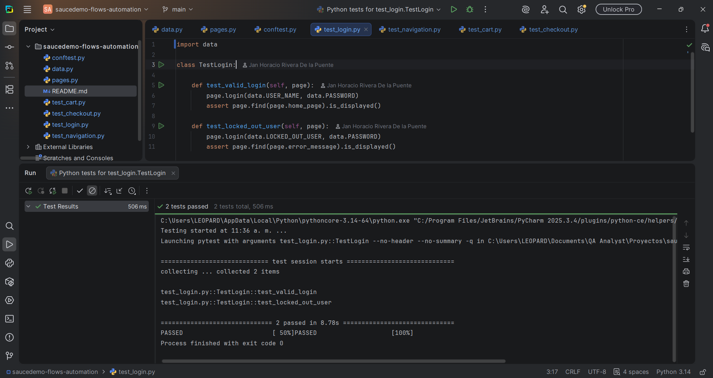
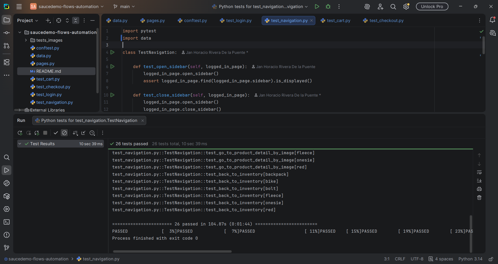
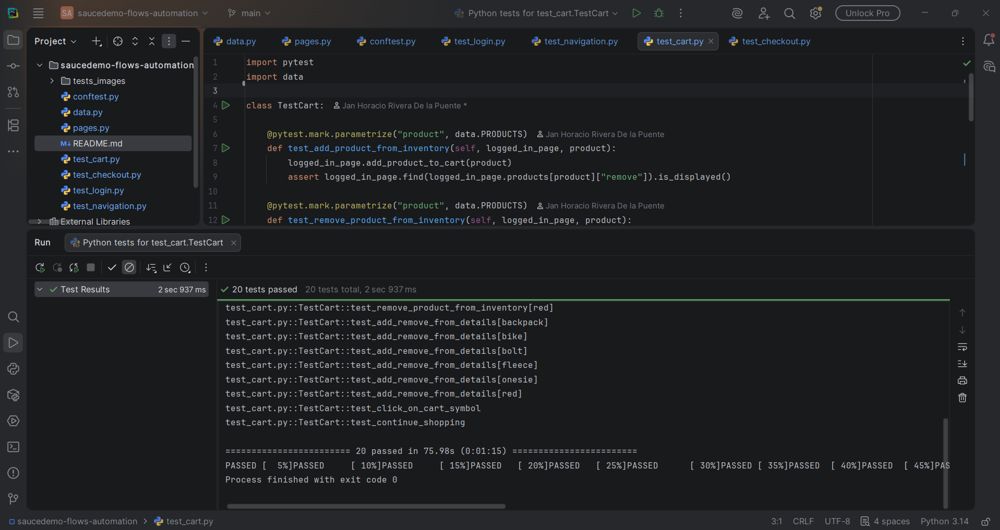
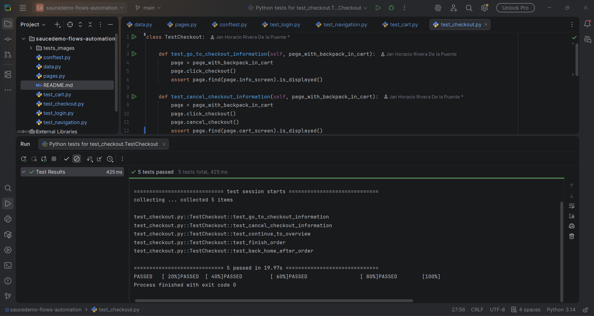

Automation – Saucedemo Flows | 08/2026
PASSAutomate the end-to-end covering critical user flows.
- The framework is structured with the Page Object Model (POM) to ensure clean separation between test logic and UI interactions.
- Successful and failed login attempts
- Adding and removing products from the cart
- Completing the checkout process



